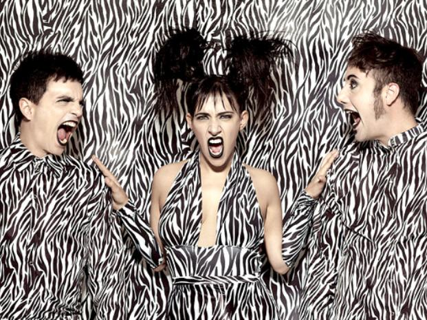

historia de la banda
Encontró su nombre al homenajear al veterano actor Osvaldo Miranda, se autodefine como "el grupo electro-pop-melodramático argentino". Empezó como cuarteto: al frente, Alejandro Sergi en voces y programación y Juliana Gattas en voces; la base la ponen Lolo Fuentes en guitarra y voces -"es la guitarra de Lolo", dice el hit- y Bruno De Vincenti en programación. Nicolás Monoto Grimaldi (en bajo) se integró posteriormente. Debutó en julio de 2001 y luego de una primera temporada en la que se presentó en recitales de propuestas independientes y fiestas electrónicas, Miranda! consiguió el 3º puesto en el rubro Revelación 2002 de la encuesta anual de Rolling Stone y fue uno de los candidatos al Premio Clarín Espectáculos 2002 en Música Rock Revelación.
Otra de las distinciones que consiguió en ese primer año fue que Gustavo Cerati votó a "Imán" como mejor tema del año en la encuesta del Suplemento Si de Clarín. En noviembre de 2002 hizo su debut discográfico con "Es mentira", un álbum grabado en el estudio de Sergio y De Vincenti con producción de este último, y editado por el sello independiente Secsy Discos. En el invierno de 2003 aparecieron las primeras evidencias de que el grupo estaba destinado a ser masivo. Luego de sus primeras apariciones en MTV, Miranda! ofreció su primer concierto en un teatro. Fue en el ND/Ateneo de la ciudad de Buenos Aires, el 16 de agosto de ese año, y ocho horas antes del show se agotaron las 600 localidades de la sala. En esa velada se presentaron como invitados Gustavo Cerati y Leo García. A finales del año, el grupo fue nominado a los MTV Video Music Awards Latinoamérica 2003 en dos categorías: como Mejor Artista Nuevo de Argentina, junto a Carajo, Emme, Kevin Johansen y Vicentico, y como Mejor Artista Independiente junto a Hermanos Brothers, Panda, Totus Toss y Volován.
En la fiesta de presentación de nominados que la señal realizó en Buenos Aires, el grupo se cruzó por primera vez con el dúo Pimpinela en un medley de "Casualidad" más "Olvídate". También en el cierre de esa temporada, la encuesta anual del Suplemento Si del Diario Clarín distinguió a Miranda! como revelación del año. En 2004, mientras que "Es mentira" era editado en México y Chile y reeditado en Argentina, luego de ser remezclado y remasterizado por Tony Rodriguez, Mario Breuer y Andrés Breuer, la banda terminó de grabar y mezclar en los estudios Panda de Buenos Aires su segundo album, "Sin restricciones". Producido por Eduardo Schmidt y Pablo Romero, integrantes de Árbol, el disco fue mezclado en los estudios Panda en Buenos Aires y masterizado en Los Ángeles, Estados Unidos, por Tom Baker. Fue editado por Pelo Music en setiembre. José Bellas, en el Suplemento Si de Clarín, opinó: "Menos ornamentado, más directo y mejor producido que "Es mentira", el segundo de Miranda! gana en dinamismo… Se sacan la presión de encima y proponen lo mismo de siempre: que su ritual de fiesta y romance no decaiga."
El grupo cerró el año siendo nominado por segunda vez para los premios MTV Video Music Awards Latin America, pero esta vez en la categoría Mejor Banda Alternativa de la región. El año del gran despegue sería 2005. Con "Yo te diré", rotando en los rankings de popularidad de las radios más escuchadas de Buenos Aires, "Sin restricciones" resultó ganador del Premio Gardel -el Grammy argentino- en la categoría Mejor Album Grupo Pop. Para consolidar ese éxito, la banda realizó en abril dos conciertos con entradas agotadas en el teatro más importante de Buenos Aires, el Gran Rex. Ambas funciones resultaron una fiesta tal, que el registro de esos shows fueron elegidos para que sean la base del primer DVD del grupo: "Miranda! en vivo sin restricciones", que sería editado en julio de ese mismo año. La edición incluye un CD con una selección de temas en vivo también registrados en esos shows del Gran Rex.

En septiembre, Miranda! fue nominado en cinco categorías para los Video Music Awards Latinoamérica México 05 de la cadena MTV: Mejor grupo o Dúo, Mejor Artista Alternativo, Mejor Artista Sur, Video del Año (por "Don", dirigido por Joaquín Cambre) y Artista del Año. "Quereme", un EP editado a mediados de 2006, fue un tributo a las telenovelas, en el cual interpretaron varias canciones clásicas de culebrones televisivos argentinos, como "Quereme… tengo frío" (de "Piel naranja"), "Una lágrima sobre el teléfono" (de "Una voz en el teléfono") y "Esa extraña dama". Luego del alejamiento de Bruno, la banda lanzó "El disco de tu corazón" en el año 2007, (en el disco Bruno participó) una placa producida por Cachorro López. El primer corte difusión del nuevo disco fue "Prisionero". Actualmente el programador del grupo, Yoku, participa pero no es nombrado como un miembro del grupo, aunque en los conciertos participe como cualquier otro.